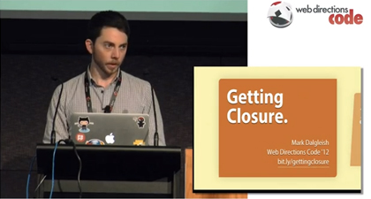

Closures
Functions are amazing in JavaScript. You may need to repeat that to yourself several times before it begins to sink in. We’re going to take a look at a few interesting aspects of functions, particularly a function’s ability to peek back at its parent’s variable scope even when the parent seems to no longer exist! (ie. The parent function has already executed and returned a value.) And that will bring us some closure.
Function-scope, not block-scope
In JavaScript variables declared anywhere in a function exist everywhere within that function. (Consider the global object as one big container function for everything inside. In this way all of your code is always wrapped in at least one function.) If you’re coming from a language like Java or C++ it may seem odd that the following example exits after listing just ten numbers, rather than one hundred.
for( var i = 0; i < 10; i ++ ){
for( var i = 0; i < 10; i ++ ){
console.log( i )
}
}
In Java those would be two completely separate i variables, each existing in their own block scope—a
boundary delimited by brackets.
The interior i’s scope wouldn’t exist beyond the inner loop and therefore it would never conflict with the outer i.
But because JavaScript has function-wide scope what’s happening is when the inner i completes its loop
that value of 10 is still present as the outer i checks its for condition of i < 10.
(Also worth noting: declaring a variable with var multiple times doesn’t throw an error so this will fail completely silently.)
For comparison here it is again, this time with separate variables:
for( var y = 0; y < 10; y ++ ){
for( var x = 0; x < 10; x ++ ){
console.log( x )
}
}
A function always has access to its container:
var luckyNo = 7,
makeLuckier = function(){ luckyNo = 999 }
undefined
luckyNo
7
makeLuckier()
undefined
luckyNo
999
But the container doesn’t have access to variables declared inside.
The child can inspect the parent, but the parent cannot inspect the child.
Note that the only difference below is the var keyword inside the
makeItLuckier function, but it definitely changes the result.
var luckyNo = 7,
makeLuckier = function(){ var luckyNo = 999 }
undefined
luckyNo
7
makeLuckier()
undefined
luckyNo
7
Lambdas
Remember how we can assign a value to a variable? Don’t worry, this isn’t a trick question:
luckyNumber = 7
7
Ok. Well, what if we just get rid of the variable part? When you enter a number into the console, you don’t have to assign it to a variable name. You can just enter the “number literal” (ie. literally the number itself) and JavaScript will echo that back to you:
7
7
And of course you can do the same with strings by entering a “string literal” (ie. literally the string itself).
'seven'
"seven"
That’s sort of interesting but doesn’t feel all that useful. I mean, what good is a raw value that you can’t recall and do operations on later? Well, the brain bending part is that in addition to entering number literals or string literals you can enter function literals too.
Unnamed functions are often called anonymous functions or lambdas, as their conceptual structure was first borrowed from lambda calculus for the Lisp programming language. The über sexy mathematical symbol for lambda is λ. I won’t make you memorize all of that or force you to read up on how inspirational Alonzo Church and John McCarthy were. Just remember that lambda means a function without a name.
So what does a function without a name look like?
(function(){ return 'Hello, World!' })
function(){ return 'Hello, World!' }
Well, it looks like a regular function, but without an assigned name, and it’s wrapped in parenthesis. We’ve declared an anonymous function but it’s like junk DNA—the code inside can never be executed. Or can it be?
IIFE’s
But here’s the big deal: We can immediately invoke a lambda function, causing it to execute as soon as it is declared, just by placing invocation parenthesis at the end of the function expression like this:
(function(){ return 'Hello, World!' })()
"Hello, World!"
Look at that! We simultaneously create the function and execute it,
causing the console to echo back "Hello, World!"
We’ll follow Ben Alman’s lead and call these strange creatures
Immediately Invoked Function Expressions, or IIFE’s for short.
(Pronounced like iffy.)
You could assign this IIFE to a variable and it would almost look like
a normal function declaration.
But keep in mind you’d be setting the variable equal to the function’s return value,
not equal to the function itself:
var hello = (function(){ return 'Hello, World!' })()
undefined
hello
"Hello, World!"
hello === (function(){ return 'Hello, World!' })
false
hello === (function(){ return 'Hello, World!' })()
true
Expression vs. declaration
So far in class I’ve insisted on creating functions and assigning them to variables (the expression form):
var hello = function(){}
rather than the classical definition form:
function hello(){}
This is because I’ve wanted to drive home the point that in JavaScript functions are first-class variables.
You can store them in objects, in arrays, pass them as arguments to other functions, and so on—just like you would with a number or string.
The two forms above are nearly equal but it’s worth explaining the difference as we dig deeper into JavaScript.
In the first example what we’re actually doing is creating an anonymous function and after creation it’s being assigned to the hello variable.
In the second example we’re defining a named, rather than anonymous, function.
We can actually combine the two methods:
var bat = function man(){
if( man.caller === man ){
console.log( 'And this second.' )
return
}
console.log( 'This will fire first.' )
man()
}
undefined
man()
► ReferenceError: man is not defined
bat()
This will fire first.
And this second.
So what’s happening here? Does anyone have any guesses? Show of hands? If you’re not brave enough to risk an answer you’ll just have to wait for the brief video lecture below.
Closure and private variables
We keep hinting at closure, coming at it from different angles. Closure is the ability of an inner function to close over—or trap—references to its containing function. In JavaScript if you have a reference to a variable then you are allowed to read its value and assign new values to it. Closures allow you to hide these references, restricting who has access to what. Let’s illustrate that through private variables.
var magician = (function(){
var
inHand = 'nothing',
inPocket = 'ace of spades',
swap = function(){
var temp = this.inHand
this.inHand = inPocket
inPocket = temp
}
return { inHand: inHand, swap: swap }
})()
undefined
magician
► Object
Be sure to copy and paste the above code into the console.
Inspect the resulting object.
(Why it is an object and not a function?)
You can see that its keys and values mirror what our IIFE is returning:
inHand and swap().
What doesn’t it have?
There’s no way to know what the current value of inPocket is.
Oh wait... Well I suppose if you’re simply swapping
inHand and
inPocket
and you have access to inHand,
then it’s pretty easy to guess the value of inPocket.
So let’s push this example just one step further:
var magician = (function(){
var
inHand = 'nothing',
inPocket = Math.random(),
swap = function(){
this.inHand = inPocket
inPocket = Math.random()
}
return { inHand: inHand, swap: swap }
})()
Now inPocket is a random number and you have no way of guessing what it is.
Each time you call swap() a new random number is loaded into inPocket.
Note that JavaScript’s Math.random() function returns a float value between zero and one.
Next week when we discuss prototypal inheritance
I’ll introduce you to Skip.js
and its convenience functions such as Number.rand() which returns random integers within a range.
We’ll also really tackle the this keyword—it’s where closure meets inheritance.
For now think of it as the “owner” of the function.
If you’re curious try experimenting with it a bit in the console ;)
A timely example
JavaScript has a really useful built-in method called
setTimeout
that waits for a specified number of milliseconds, then fires a callback function.
(See also its cousin setInterval.)
Here’s a simple example that waits for 2000 milliseconds (equal to two whole seconds)
and then fires the callback function we provide:
setTimeout( function(){
alert( 'Two seconds later...' )
}, 2000 )
Here’s a problem though: Look at the code sample below.
Because of closure our callback function will still have “live access” to the value of i when it finally fires.
Who can tell me what’s going to happen here?
Try it yourself: copy and paste the example into your console.
Why does this error change the value being displayed but not the timing of setTimeout?
for( var i = 1; i <= 5; i ++ ){
window.setTimeout( function(){
alert( i + ' out of 5' )
}, 1000 * i )
}
What’s the difference between the code above and the code below? How does the code below solve the problem encountered above?
for( var i = 1; i <= 5; i ++ ){
(function( i ){
window.setTimeout( function(){
alert( i + ' out of 5' )
}, 1000 * i )
})( i )
}
This can be tricky stuff at first. The best way to better understand closure (and JavaScript’s lexical scoping) is to just keep playing with it. The more you experiment the more you will develop and intuitive sense of scope and how to make it work for you.

Closure down under
Phew! That was a lot. Let’s have a look at Mark Dalgleish’s excellent JavaScript: Getting Closure lecture and then take our break. It’s only 15 minutes and entirely worth it.